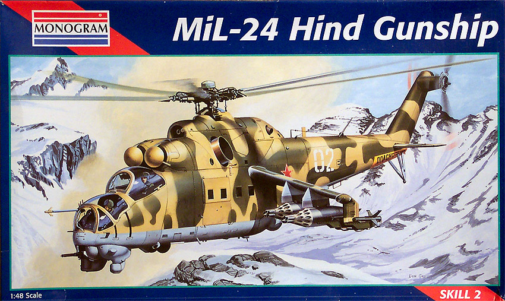
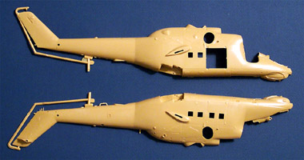
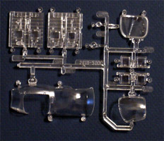
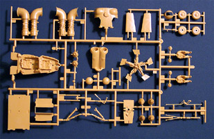
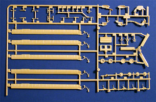
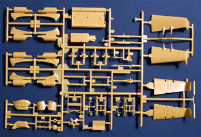
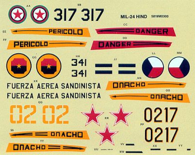

{kind=link}
{kind=link}
{kind=link}
{kind=link}
{kind=link}


1/48 Scale Monogram MiL-24D Hind

Kit #5819 MSRP $22.00
Images and text Copyright © 2004 by Matt Swan
Developmental Background
One of the most menacing weapons in the air is the Mi-24 assault helicopter. Soviet helicopter designer Mikhail Leontevich Mil was as crucial to the development of Soviet helicopter aviation as Sikorsky was to the United States. Mil initially saw success with his Mi-8 designed around twin turbine engines driving a five-blade rotor as a troop transport and utility helicopter. The Mi-24 Hind assault helicopter shared some features with the Mil-8 but was intended to carry a substantial weapons load. The Mi-24 is a close counterpart to the American AH-64 Apache, but unlike this and other Western assault helicopters it is also capable of transporting up to eight troops. Armored cockpits and a titanium rotor head enable it to withstand 20-mm cannon hits. First flown in 1970, it is considered to be one of the most powerful helicopters in the world and has been in active service since 1985.
The Hind D was specially developed for the anti-tank/ground support role and is equipped with a heavy 12.7mm MG in the chin turret mount. Rocket pods and "Swatter" guided missiles can also be carried on external hard-points on the stub wings. Each wing has three hard-points for a total of six stations. A representative mix when targeting armor formations would be eight AT-6 ATGMs, 750x 30-mm rounds, and two 57-mm rocket pods. The aircraft can store an additional ammunition basic load in the cargo compartment in lieu of carrying troops. The Hind’s wings provide 22% to 28% of its lift in forward flight. In a steep banking turn at slower airspeeds, the low wing can lose lift while it is maintained on the upper wing, resulting in an excessive roll. This is countered by increasing forward airspeed to increase lift on the lower wing. Because of this characteristic, and the aircraft’s size and weight, it is not easily maneuverable. Therefore they usually attack in pairs or multiple pairs, and from various directions.
Its size may have been a consequence of the selection of the Mi-8’s propulsion system, and while may be disadvantageous in combat; compensation comes in the form of high speed (it is still one of the fastest assault helicopters in the world) and fighter-like agility. Pilots have commented, “It's like flying a fighter and for an aircraft of 13 tons it is exceptionally agile and maneuverable.” “With both cockpits and other vital components adequately protected, one feels quite secure.” This heavily armored combat helicopter became the "signature" weapon of the conflicts in Afghanistan and the Chechen wars and is widely distributed among the forces of the former Warsaw Pact countries. At least 34 countries currently have Mi-24’s in their inventory including but not limited to -- Armenia, Afghanistan, Algeria, Angola, Belarus, Bulgaria, Cambodia, CIS, Cuba, Czech Republic, Ethiopia, Georgia, Germany, Hungary, Iran, Iraq, Libya, Mongolia, Mozambique, Nicaragua, North Korea, Peru, Poland, Slovakia, South Yemen, Syria, Ukraine and Vietnam.
The Kit
It’s not too often that I take a foray into the world of helicopters but every once in a while there is that subject which catches my eye and I just have to have one. This is the case with the Mi-24D, what a wicked looking helicopter and the movie industry really added to its allure. Monogram did a really nice job on this kit and now it’s available under the Revell nametag as well. She comes in a fairly large box and this is needed because this is a fairly large model. Inside the box we have the two massive fuselage halves along with three large trees of additional pieces all done in a good quality tan injection molded polystyrene. Mold separation lines are light and there are no obvious injector pin markings or sink holes. I found some very slight indications of flash on a couple of parts but nothing that could not be knocked off quickly with a razor knife.
The exterior detailing of the helicopter is an interesting combination of finely raised panel lines a deeply recessed lines for all the service and access hatches. While the fuselage pieces are quite large I was glad to see that they do not have very much warpage from front to back, nothing that cannot be pulled out in the basic assembly process. Interior detail on the kit is very good with lots of cockpit accessories and good definition in the cargo/passenger compartment. One item here that I was not real thrilled about was the use of large clear panels that incorporate the small side windows and all the sidewall detail. These will require careful masking on both sides for painting. The rotor head to blade union is a split design that will provide good strength for the large blades and there is plenty of good detail on the rotor head itself. The pilot figures have optional hard or soft helmet heads and we get a basic armament selection. The only options in armament are a choice of missiles on the outside hard-points.
In addition to all these tan injection pieces we have a medium sized sprue of clear parts. Included here are the interior bay side panels I mentioned earlier along with the main canopy, crew access doors and various lenses and windows. These parts demonstrate good clarity and will probably be crystal clear after a dip in the Future bath. Along with the nine clear pieces there are 141 pieces in tan plastic giving us a total of 150 pieces in the box.





You may click on the images above to view larger pictures
Decals and Instructions

The instructions for this kit come in the form of a very large fold-out sheet. They feature an adequate historical background of the aircraft along with a comprehensive color chart. Paints are listed by color name in seven different languages. There are a total of forty-seven exploded view construction steps crammed onto the sheet with general paint codes and part names. The instructions are concise and clear and should present no problem to the modeler of average skill during construction. Lastly we have decal placement charts for the four different markings provided along with the basic camouflage pattern markings.
The decals included with the kit come on a small sheet that seems to yellow quickly. As I mentioned a moment ago there are four different aircraft markings provided; Afghanistan, Czechoslovakian, Nicaraguan and those used by the Soviet Union. The markings appear to be fairly basic with not much in the line of service stencils or smaller warning markings. The decals do show good color density and print registry. I used a set of these markings already and while they did respond well to setting solutions there is a tendency towards silvering.
Conclusions
Any fan of contemporary combat aircraft probably should have one of these in their collection. The model is well made, features a good level of detail on the parts and good parts fit. The instructions are easy to follow but interior painting instructions are not comprehensive enough. Decals are adequate for general modeling but I think I will have to get some aftermarket decals for mine. Speaking of aftermarket there are a few items out there aimed at this kit. Czech Master offers an upgrade for the Trumpeter kit but it should be useable for this if desired. They also have an interior detail set and armament set. Eduard has various interior and exterior photo etched sets available and Tally Ho Decals produces markings for the Czech Air Force. Another marking alternative is from Blue Rider Decals for the Mongolian Air Force. Cutting Edge has a mask set and handles interior and exterior sets for the D.
While it is not the perfect helicopter kit I still have to give it high marks and a good recommendation. I’ve built one and had to pick up a second so I could explore some alternative markings.